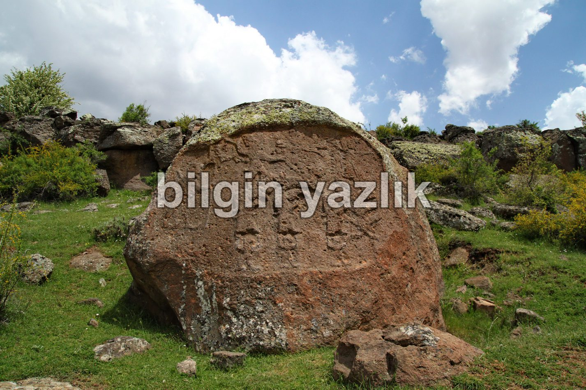
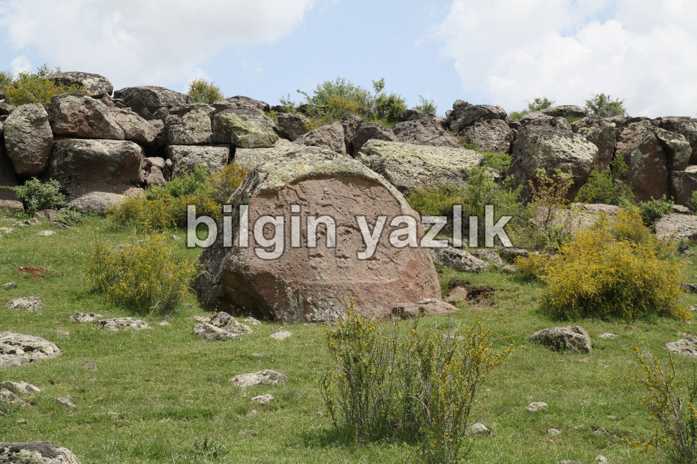

İmam Kulu Hitit Kaya Oyması
Kayseri ili Develi ilçesinden Bakırdağı istikametine doğru seyrettiğinizde Bakırdağı’nı geçtikten sonra Tufanbeyli yoluna devam etmelisiniz. Bakırdağı’nı geçtikten sonra bir tabela sizi İmam Kulu köyüne yönlendirecektir. Köyün içerisinden tabelaları takip ederek kaya oymasına ulaşabilirsiniz. Otomobil ile kayanın yaklaşık 700 mt yakınına kadar gidebiliyorsunuz, geriye kalan yolu yürümek gerekiyor. Anıt büyükçe (2 m) bir kaya üzerine işlenmiş Hitit figürlerini barındırıyor. Figürler ve anlamları hakkında internette çokça bilgi bulunuyor. Günümüze kadar korunarak gelmiş olması benim açımdan memnuniyet verici oldu. Oyma kayayı yerinde ziyaret etmek isteyenler için tam konum veriyorum:
38 D 14′ 50” N
35 D 55′ 44” E


Bu yazı taliyol arşivinden taşınmıştır. · özgün kayıt